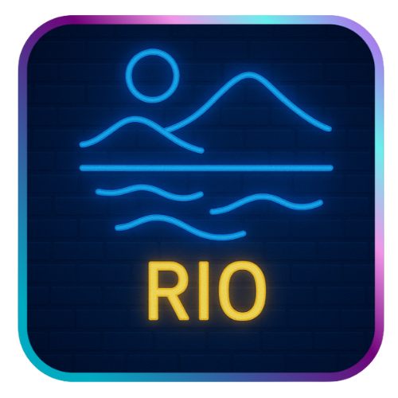

Se colocan parejas de la misma especie hasta llegar a un máximo de 6 dinosaurios.
Para puntuar hay que colocar exactamente 3 dinosaurios, sean cuales sean.
En este recinto tan solo se pueden poner dinosaurios de la misma especie.
Nos llevaremos 7 puntos si ponemos un dinosaurio y nuestro parque es el que más dinosaurios tiene de esa especie.
Este recinto puede llegar a albergar dinosaurios de distintas especies, por lo que no podremos repetir.
Este recinto puede llegar a albergar un dinosaurio diferente respecto a todo el tablero

No se considera un recinto del zoo pero sí puntuará con 1 punto por dinosaurio al final de la partida